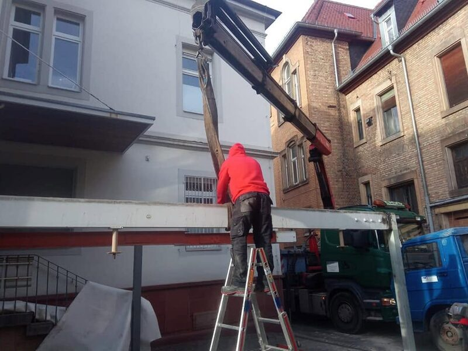
Demontage
Fachgerechte Demontage von Anlagen, Maschinen und Bauteilen – sauber getrennt und wiederverwertbar.
Abbruch & Demontage aus einer Hand
Böllinger steht für professionelle Abbrucharbeiten, Entkernung und Industriedemontage – zuverlässig, termingerecht und fair. Mit modernem Maschinenpark realisieren wir Projekte jeder Größe in Offenbach an der Queich und Umgebung.
Unsere Leistungen
Von der einzelnen Entrümpelung bis zur kompletten Industriedemontage – bei Böllinger bekommen Sie alle Leistungen aus einer Hand.

Fachgerechte Demontage von Anlagen, Maschinen und Bauteilen – sauber getrennt und wiederverwertbar.
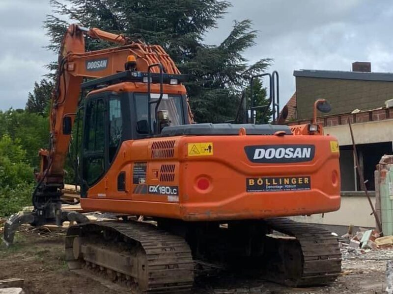
Kompletter oder teilweiser Gebäudeabbruch mit modernem Gerät – sicher, staubarm und effizient.
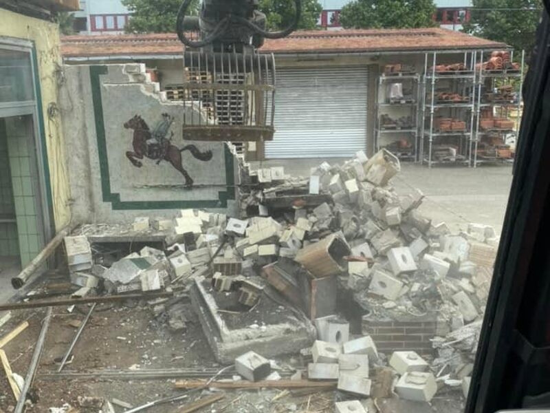
Räumung von Wohnungen, Häusern, Kellern und Gewerbeflächen – besenrein übergeben.
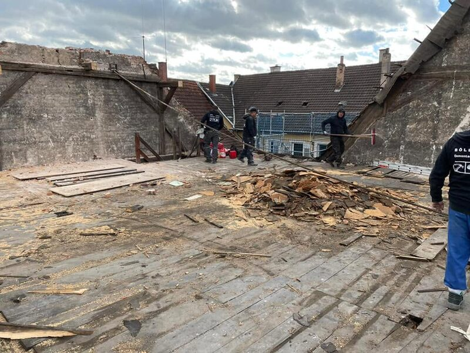
Rückbau bis auf den Rohbau: Innenausbau, Leitungen und Einbauten werden fachgerecht entfernt.
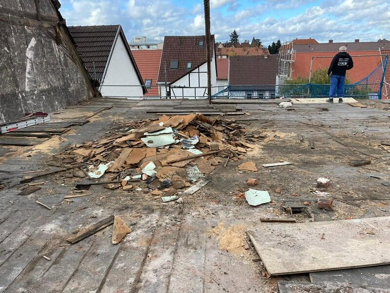
Umweltgerechte Entsorgung und Recycling sämtlicher Abfälle – inklusive ordnungsgemäßem Nachweis.
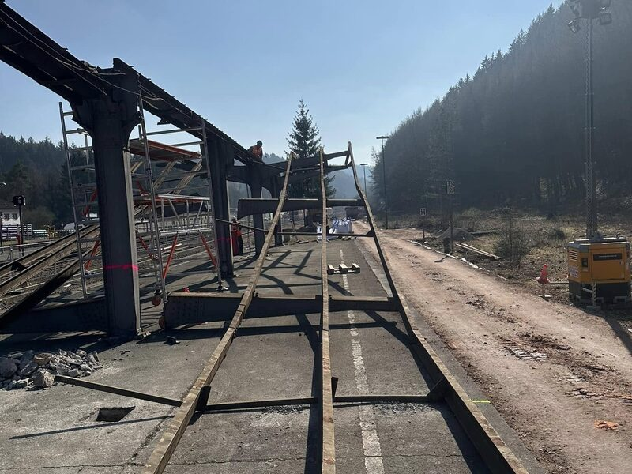
Demontage ganzer Produktionsanlagen und Industriehallen – für Betreiber und Generalunternehmer.
Jahre Erfahrung
Abgeschlossene Projekte
Umweltgerechte Entsorgung
Schnelle Rückmeldung
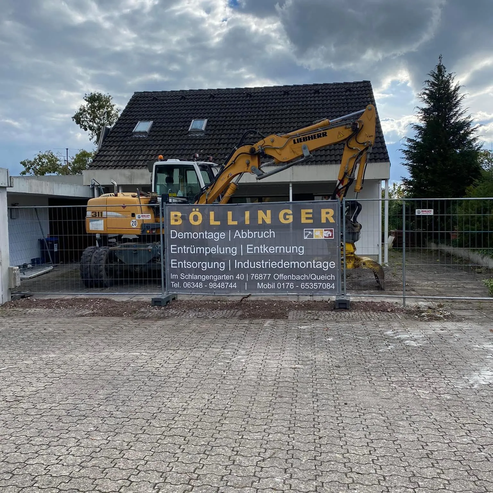
Über uns
Böllinger mit Sitz in Offenbach an der Queich ist Ihr verlässlicher Partner für Abbruch und Demontage in der gesamten Südpfalz. Mit leistungsstarkem Gerät und jahrelanger Erfahrung realisieren wir Projekte jeder Größe – vom privaten Hausabriss bis zur komplexen Industriedemontage.
Dabei legen wir Wert auf saubere Arbeit, Termintreue und faire Preise. Sprechen Sie uns an – wir beraten Sie kostenlos und unverbindlich direkt vor Ort.
So arbeiten wir
Sie kontaktieren uns telefonisch oder über das Formular – kostenlos und unverbindlich.
Wir verschaffen uns ein Bild, beraten Sie und erstellen ein transparentes Angebot.
Unser Team setzt Ihr Projekt termingerecht, sicher und sauber um.
Besenreine Übergabe inkl. fachgerechter Entsorgung und Nachweis.
Referenzen
Ein Ausschnitt aus unseren laufenden und abgeschlossenen Projekten.
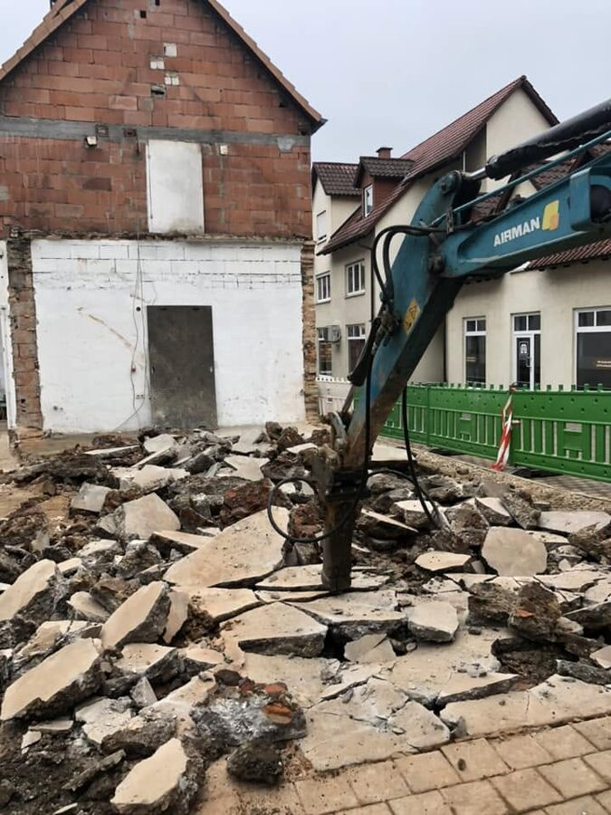
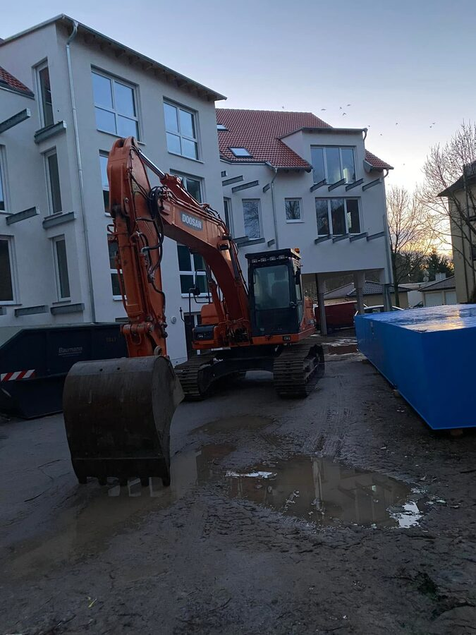
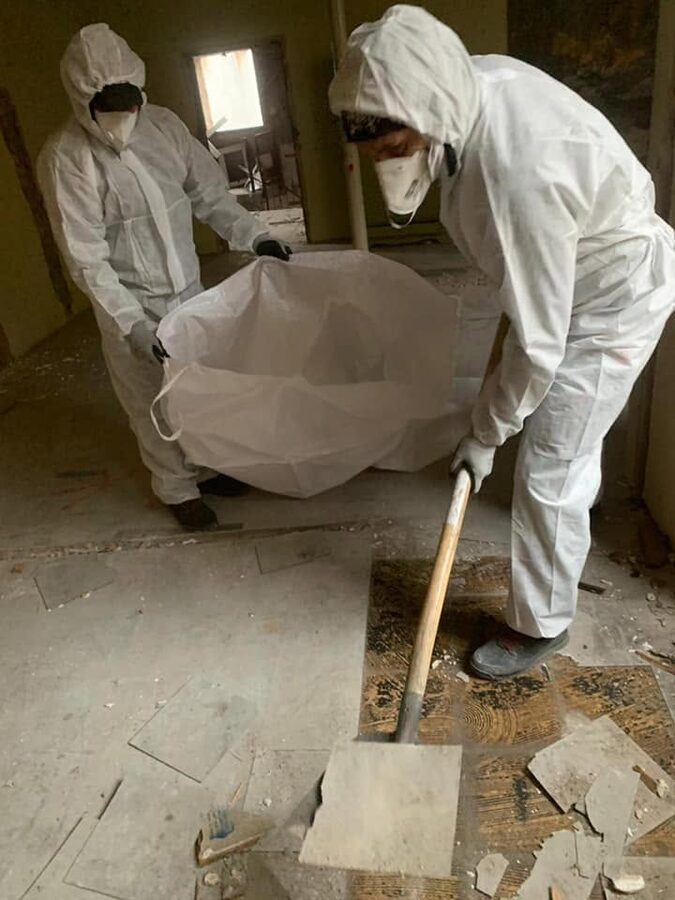
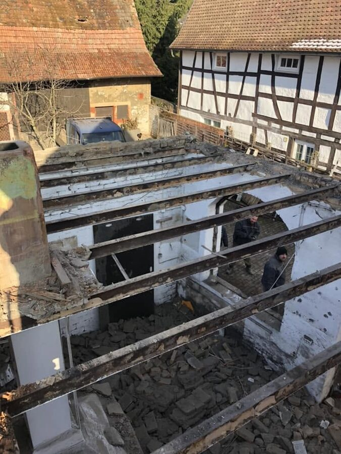
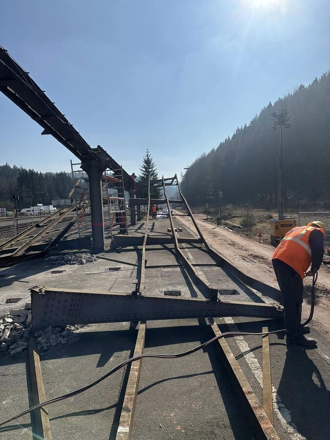
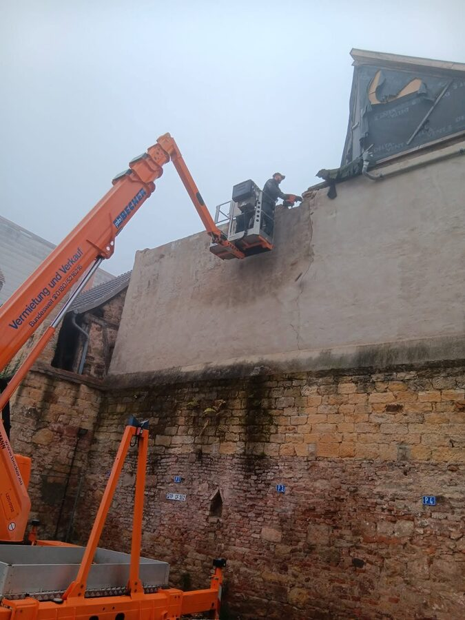
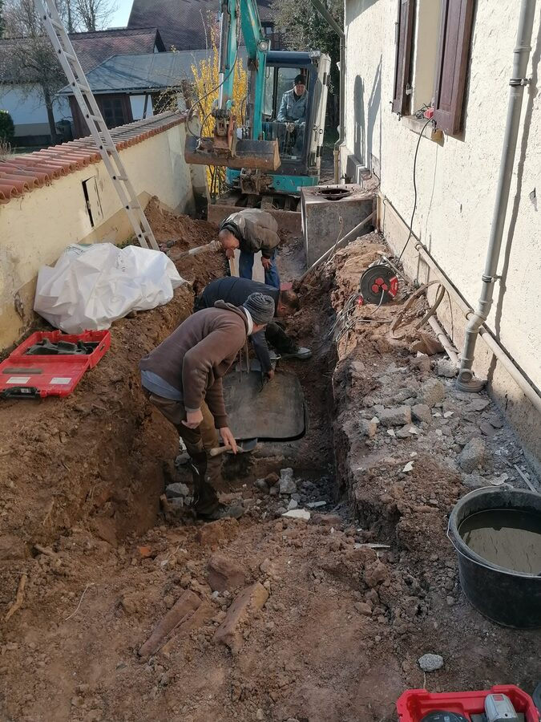
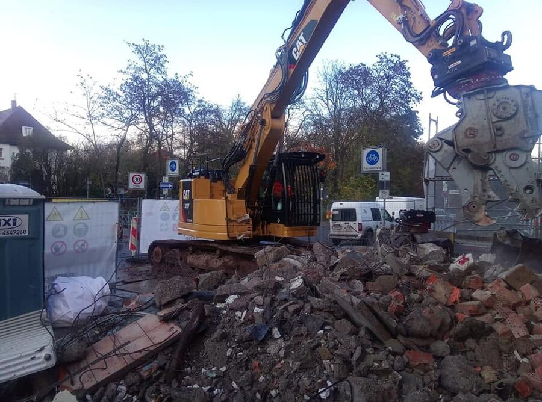
Kundenstimmen
Zufriedene Auftraggeber aus der Region – von Privatkunden bis zu Gewerbe und Generalunternehmern.
Vom ersten Termin bis zur besenreinen Übergabe lief alles reibungslos. Sauber gearbeitet und absolut termintreu – jederzeit wieder!
Unser altes Betriebsgebäude wurde schnell und professionell abgerissen. Faires Angebot, top Kommunikation und alles aus einer Hand.
Kompetente Beratung und zuverlässige Entsorgung inklusive Nachweis. Ein verlässlicher Partner für unsere Bauprojekte in der Südpfalz.
Häufige Fragen
Wir sind in Offenbach an der Queich und in der gesamten Südpfalz für Sie im Einsatz. Gerne prüfen wir auch Projekte im weiteren Umkreis – sprechen Sie uns einfach an.
Ja. Die Vor-Ort-Beratung und das anschließende Angebot sind für Sie kostenlos und unverbindlich. Erst wenn Sie überzeugt sind, legen wir los.
Selbstverständlich. Wir entsorgen sämtliche anfallenden Materialien umweltgerecht, trennen Wertstoffe zum Recycling und stellen Ihnen auf Wunsch den ordnungsgemäßen Entsorgungsnachweis aus.
Ja. Schadstoffe wie Asbest oder KMF werden von uns fachgerecht und unter Einhaltung der geltenden Vorschriften zurückgebaut und entsorgt.
Das hängt von Umfang und Terminlage ab. In vielen Fällen sind kurzfristige Termine möglich – teilen Sie uns Ihren Wunschzeitraum mit, wir finden eine Lösung.
Die Kosten richten sich nach Größe, Bauart, Zugänglichkeit und eventuellen Schadstoffen. Nach einem kurzen Vor-Ort-Termin erhalten Sie von uns ein transparentes, nachvollziehbares Angebot.
Fordern Sie jetzt Ihr kostenloses und unverbindliches Angebot an.
Kontakt
Wir freuen uns auf Ihre Anfrage und melden uns schnellstmöglich zurück.